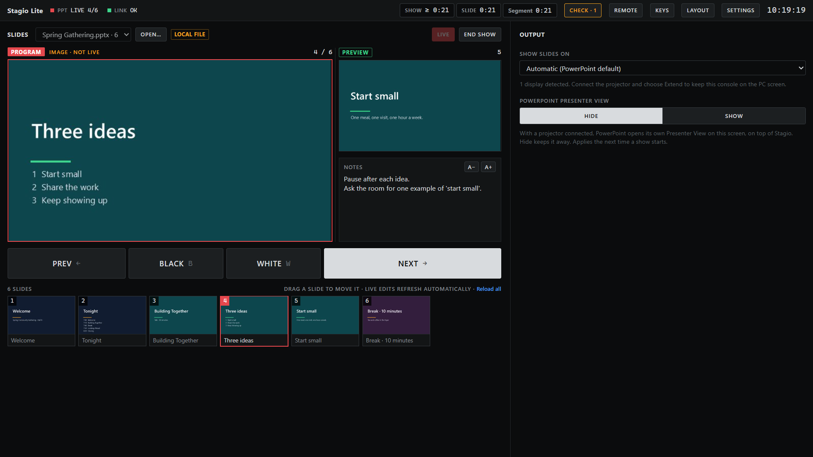
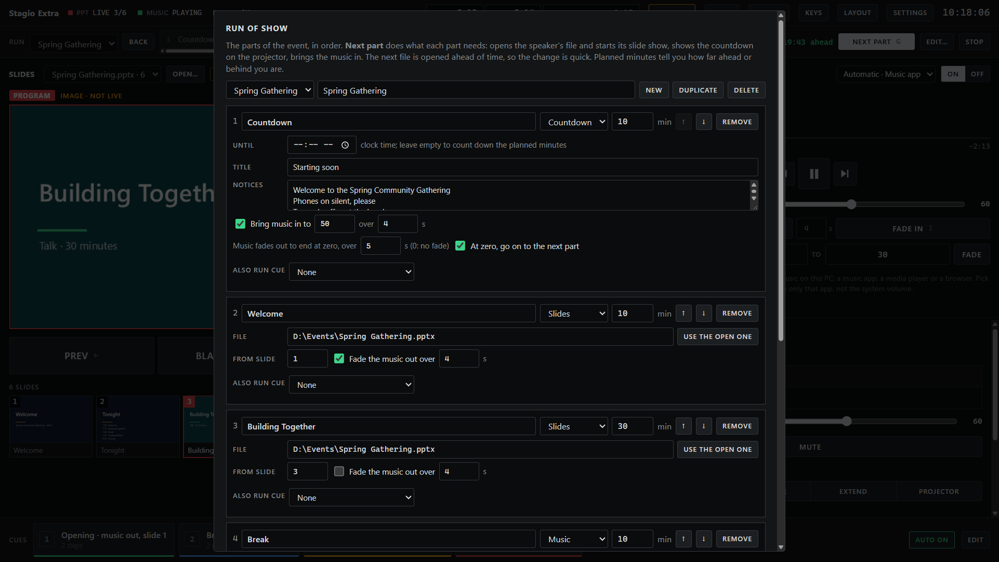
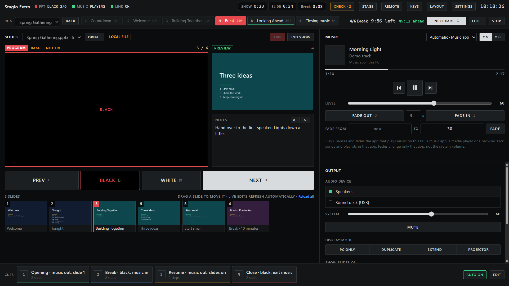
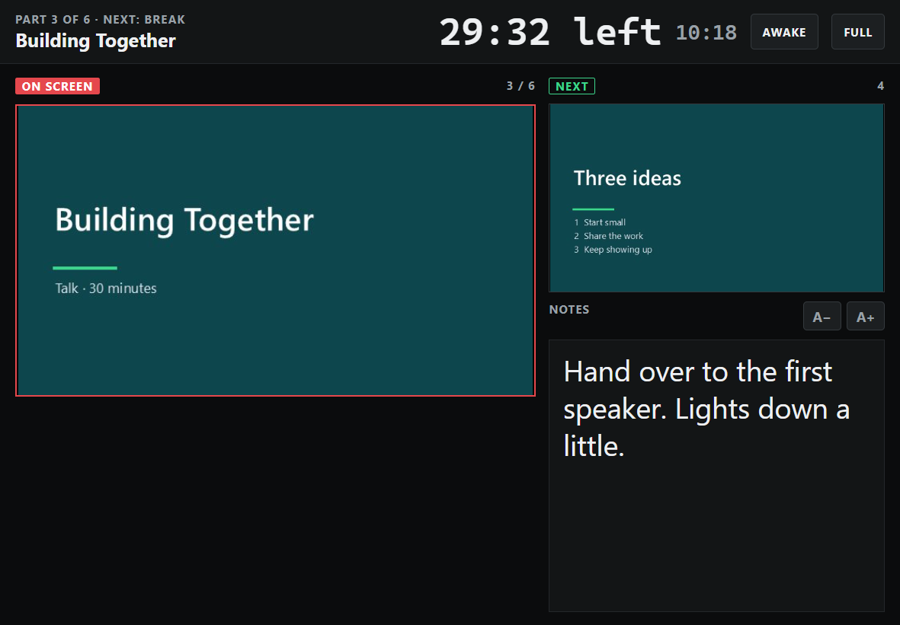
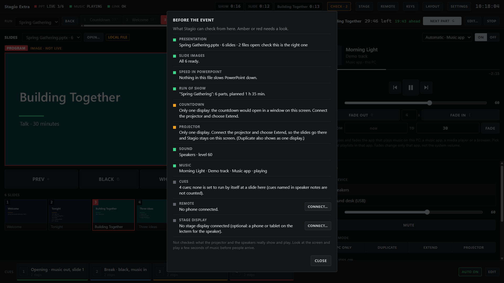

At most events, one person changes the slides, another plays the music, and someone else deals with the projector and the sound. Stagio puts all of that on one console, so one person can run it, from the computer or from a phone.
It works with the PowerPoint you already use and whatever plays your music on the same computer. No accounts, nothing in the cloud.
Which edition?
Stagio comes in three editions. Each one only shows what it has, so there is nothing to set up that you will not use. Each bigger edition has everything of the smaller one.
| Lite | Standard | Extra | |
|---|---|---|---|
| For | Presenting your own slides | One person running slides, music and the projector | Whoever runs the whole event |
| Slides, black/white, notes, timers, real slide pictures, phone remote, pre-event check | Yes | Yes | Yes |
| Music and fades, sound output, projector mode, cues | – | Yes | Yes |
| Run of show, opening countdown, stage display and messages | – | – | Yes |
| First-time setup | Open the file, scan the code | + choose the music mode, connect the projector | + plan the run of show |
All three can be installed on the same computer. They share their settings, PIN and cues, and one runs at a time: opening another edition asks whether to switch to it. The version numbers (Beta 1.0 and up) are kept per edition and per system.

Install
Windows
- Download your edition from the download page and open it. Windows 10 or 11, with PowerPoint 2016 or Microsoft 365. For music, any player you already use.
- If Windows says “Windows protected your PC”: More info → Run anyway. The installer is not code-signed.
- If nothing happens, antivirus software is still checking the new file. Try again in a few minutes.
- Stagio used to be called OneDesk. With OneDesk installed, install the same edition of Stagio (OneDesk Extra → Stagio Extra): it updates it and keeps the settings, PIN and cues. OneDesk 0.x: install Standard. Windows Firewall asks once more; allow private networks.
Mac test version
- Download the Apple silicon or Intel version and drag it to Applications.
- The first time, Control-click the app → Open (it is not signed by Apple).
- Allow it to control PowerPoint and your music app (Music or Spotify) when macOS asks. The live projector picture needs macOS 14 and the Screen Recording permission.
- Not yet tested with PowerPoint on a real Mac: try it before an event.
The console
Open your presentation in PowerPoint, or with Open… in Stagio (recent files, a path, or drag the file onto the window). Start the show with Start or F5.
 1
2
3
4
5
6
7
8
9
10
1
2
3
4
5
6
7
8
9
10
- Run of show (Extra): the parts of the event, time left, ahead or behind. More
- Timers: how long the show has run, this slide, and this part (click twice to restart it).
- Program: what is on the projector right now, taken from the projector itself.
- Preview: the next slide.
- Notes for the slide on the projector; A− / A+ change the size on this device.
- Prev, Black, White, Next. Black and white blank the projector; press again to come back.
- All slides: click one to jump there. The pictures are the real slides and follow edits made in PowerPoint, even during the show. Hidden slides are dimmed and marked Hidden; the show skips them. On the computer, drag a slide to another place to move it in the file, then Save file.
- Music: play, skip, level and fades. More
- Output: sound device, system level, projector mode. More
- Cues: one button for a sequence of steps. More
The status at the top left shows PowerPoint (LIVE, BLACK, the slide number), the music and the link to this computer. Layout lets you resize panels, hide what you don't need, or swap sides; each computer keeps its own layout.
Slow files (Windows): some files exported from Canva change slides slowly in PowerPoint for Windows because of decorative text in fonts the computer doesn't have. Stagio shows Slow in PowerPoint; Speed up turns that text into pictures of itself, so the slides look the same and change quickly. It can make a faster copy or speed up the file itself (an earlier version is kept on this computer).
Your phone is the remote
- Phone and computer on the same Wi-Fi.
- On the computer, click Remote and scan the code with the phone's camera. Or type the address shown, then the 6-digit PIN.
- Add it to the home screen (the steps are in the Remote window). From then on it opens like an app.
The phone shows the same console: Program, Preview, notes, timers and the four slide buttons, which stay on screen while you scroll. Awake keeps the screen on; Full hides the browser bars. In Settings you can let the top bar and the buttons scroll instead, and choose the notes size.
Eight wrong PINs in a row lock that phone out for five minutes.
No Wi-Fi?
- Stagio Wi-Fi (Windows): the computer opens its own network. Scan the first code to join it and the second to open Stagio. Works with iPhone and Android.
- Phone hotspot (Mac): turn on the phone's hotspot, join it from the Mac, then scan the code.
- Bluetooth (Android, Chrome): the Bluetooth remote controls slides, black/white, cues and music without any network. It shows the slide number, not the pictures.

Music and fades Standard · Extra
Stagio controls whatever plays your music on this computer: a music app, a media player or a browser. On Windows that is any app in the system's media controls (the box that appears with the volume keys); on the Mac, the Music app or Spotify. No account or sign-in is needed.
- Automatic follows the app that plays, and stays with it while it plays, so a video in a browser doesn't take over. The menu at the top of Music can pick one app instead.
- Play, pause, skip, click the progress bar to jump (when the app allows it), level and fades. Choose songs and playlists in the app itself.
- The first time, start the music once in the app (pausing afterwards is fine). Stagio remembers the app and offers to open it next time.
Fade out lowers the music smoothly and pauses it, then puts the level back for next time. Fade in starts it and brings it up. The seconds box sets how long. Fade from … to … goes between two levels you choose, for example from 60 down to 20 under a speaker. Fades are smooth, without crackle, and a new fade takes over from one in progress.
Sound and projector Standard · Extra
- Audio device: switch between the mixer, speakers and headphones. The system level moves smoothly instead of jumping.
- Display mode (Windows): PC only, Duplicate, Extend, Projector only. Use Extend: the slides go to the projector and Stagio stays on your screen. On a Mac: Duplicate and Extend (close the lid for the projector only).
- Show slides on: which screen PowerPoint uses for the show (all editions).
- PowerPoint presenter view: with a projector, PowerPoint opens its own presenter view on top of Stagio. Hide keeps it away (all editions).
Cues Standard · Extra
A cue runs several steps from one button, for example Opening: music out, start the show at slide 1, or Break: black screen, music in. Edit them under Cues → Edit: music steps (play, pause, fades, levels), slide steps (start, go to, next, black, white, end), output steps (sound device, system level, display mode) and waits. Fades run in the background, so the next step happens right away.

- Keys 1–9 run the first nine cues. To avoid accidents, set them to need Shift + 1–9 under Keys.
- Run by itself at a slide: the cue runs when the show reaches that slide going forward (not when stepping back). It stays with the slide if slides are added or moved.
- Whoever builds the slides can do the same by writing
[cue: Break](the start of a cue's name) in a slide's notes. - Auto on / off switches all of these at once.
Run of show Extra
Plan the event as a list of parts. During the event, Next part (or the key G) does what the next part needs.

| Part | When it starts, Stagio… |
|---|---|
| Slides | opens the file and starts its show from the slide you chose; the previous file's show ends afterwards, so the projector never shows the desktop. Optionally fades the music out. |
| Countdown | shows a countdown full screen on the projector, to a clock time or for the planned minutes. More |
| Music | blacks out the projector (if a show is up) and fades the music in: a break, walking in or out. |
| Manual | only times it; nothing changes on screen. |
Any part can also run a cue. Click Edit… → New to start from the usual shape of an event, then rename, reorder and fill in the files. For the next event of the same kind, Duplicate it and change only the files.

- The bar shows every part: red is now, faded parts are done, a green line means that part's file is already open and ready.
- Time left in this part turns amber when it runs over and red after two minutes. Next to it: how far ahead or behind the whole event is.
- The next file opens in the background while the current part is on, without a window, so changing speakers takes about half a second.
- Clicking a part asks Go here? first, so a stray click changes nothing. Back returns to the previous part; Stop ends the run (the slide show keeps going).
- A missing file is shown in red in the bar and in the pre-event check. If Stagio is restarted, the run carries on where it was.
Opening countdown Extra

A countdown part fills the projector with a big countdown, a title such as Starting soon, and notices that take turns underneath. Count to a clock time (for example 10:00) or for the planned minutes. The music can fade in when it starts and fades out to end exactly at zero; then the run goes on to the next part by itself.
It needs the projector as a second screen in Extend mode. With one screen, the countdown opens as a window on the computer instead, so you can check it without covering the console.
Stage display and messages Extra
A phone or tablet on the lectern shows the speaker or host the slide on the projector, the next one, the notes in large type and the time left, and any message you send from the console, such as 5 minutes left.

- Connect: in the console, Remote → Stage display, and scan the code with the speaker's phone or tablet. Or open the address shown and enter the stage PIN, which is different from the console's PIN.
- View only: the stage display can't change slides, play music or open the console, so you can hand it to anyone. Several can be open at once (speaker, host, musicians).
- The top shows the run of show's part and its time left (amber when over, red after two minutes), or how long this part has run; and the time of day. Awake keeps the screen on; Full hides the browser bars. If the link drops, it says Not connected in large letters and reconnects by itself.
- Messages: click Stage at the top right of the console. Send a ready-made message (you can change the list) or type your own. It flashes full screen on the stage display, then stays at the top until you clear it. When the speaker taps it, the console shows Seen. In testing a message appeared in about a tenth of a second.
- Tick The speaker can change slides to give the stage display Prev and Next buttons (off by default).
The stage display needs Wi-Fi: the venue's, Stagio's own (Windows) or the phone's hotspot (Mac). Bluetooth is too slow for pictures.
Before the event

Check (top right) lists what Stagio can verify: the presentation, slide pictures, slow text, the run of show and its files, the projector, presenter view, sound, music, cues, connected phones and stage displays. Amber or red needs a look, often with a button that fixes it. What it can't check is what the projector and speakers really show and play: look at the screen and play a few seconds of music before people arrive.
Keyboard
Works while the Stagio window is in front. Presentation clickers work too.
| → Space Enter PgDn | Next slide |
| ← PgUp Backspace | Previous slide |
| B or . | Black screen on/off |
| W or , | White screen on/off |
| F5 | Start the show |
| Home / End | First / last slide |
| P · N | Music play/pause · next track |
| O · I | Fade out · fade in |
| ↑ / ↓ | Music level ±5 |
| 1–9 (or Shift + 1–9) | Run a cue |
| G | Next part of the run of show |
| ? | Show the keys |
Troubleshooting
- The phone can't open Stagio
- The phone must be on the same Wi-Fi (not mobile data or a guest network), and Stagio must be running. Some routers keep devices apart ("AP isolation"). When Windows first asks whether Stagio may use the network, allow it. Security software may block port 7300. If a chat app's scanner doesn't open the link, use the phone's camera, or type the address and PIN. No luck: use Stagio Wi-Fi or Bluetooth.
- “Windows protected your PC”, or the installer does nothing
- More info → Run anyway. If nothing happens at all, antivirus software is still checking the new file; try again in a few minutes.
- PowerPoint's own presenter view covers Stagio
- Output → PowerPoint presenter view → Hide. It applies the next time a show starts.
- A file opened from an e-mail or download is read-only
- It is in PowerPoint's Protected View. Click the amber Protected View · enable editing tag.
- The music doesn't respond
- Start the music once in your player; after that Stagio can control it, also when paused. If several apps play, pick the right one in the menu at the top of Music.
- Switching editions
- Open the other edition. The one that is running asks whether to switch; the settings, PIN, cues and runs of show come along. Uninstalling one edition keeps the shared settings for the others.
- Where are my settings?
- Windows:
%APPDATA%\OneDesk, still under Stagio's earlier name (the previous version is kept as a backup and used if the file is ever damaged). Mac:~/Library/Application Support/OneDesk.